The default settings provided in the code sample have been defined to provide the best user experience related to geometry exercises for middle school level. Feel free to adapt those settings according to your use case, as your app may have other requirements.
This value is set to avoid small strokes. It means that strokes smaller than the defined value will be recognized as dots.
If you increase the value, you will detect more dots. If you decrease it, you will detect smaller strokes, but dot input will be harder.
This value is set to ease the drawing of large circles, but can be updated according to your needs. The higher the value is, the more likely the widget will recognize circles rather than ellipses. The lower the value is, the more the widget will give accurate recognition of all kinds of ellipses and circles.
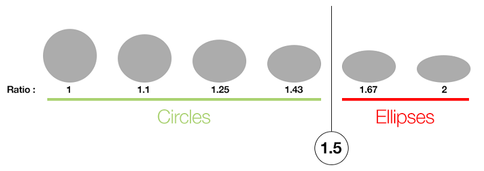
Both implicit and explicit constraints' detection and display features can be enabled or disabled. The default values are set to:
Implicit constraints are mainly a drawing assistance. They are automatically detected by the widget and quickly fade out. We recommend to make implicit constraints fade out because they can be confused with explicit constraints. They do have the same graphic design but not the same behavior. We also suggest you add a button to let the user display implicit constraints on demand.
Explicit constraints are to be manually set and have priority over implicit constraints. New explicit constraints have priority over previous constraints.
You can also choose to disable the implicit constraints' detection and display features.
To erase an explicit constraint, the display feature for explicit constraints has to be enabled.
In the below figures, you can see examples of detection and display feature for implicit constraints.
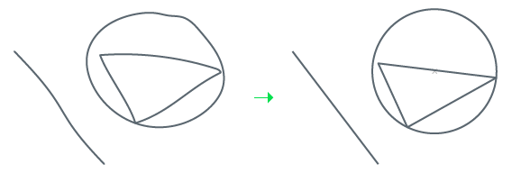
Fig.01: Detection and display are disabled.
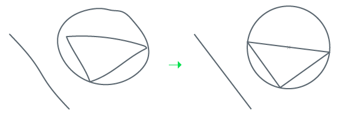
Fig.02: Detection is enabled but display is not.
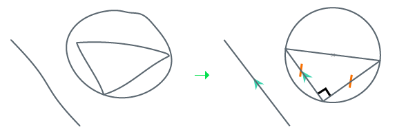
Fig.03: Both detection and display are enabled.
All constraint types can be enabled or disabled independently of each other.
The point size value is set to be visible:
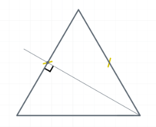
This value is set to offer a graphic rendering that is visible with adjacent angles and clearly differentiated from the drawing.
This value is set to offer a graphic rendering that is visible over lines and clearly differentiated from the drawing.
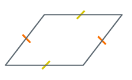
We recommend against setting the value too high.
The defined set of colors is set to:
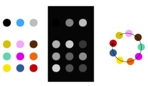
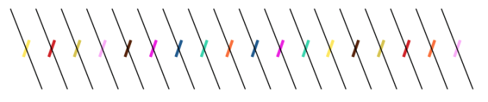
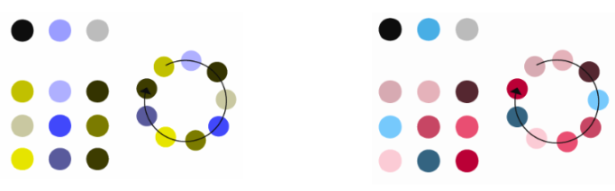
We strongly recommend against modifying those colors.
The stroke display value is set to:
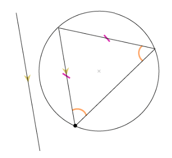
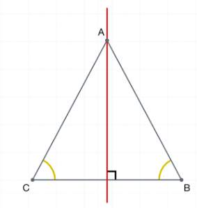
If you want to allow the user to draw with different colors, be careful to keep their constraints visible and understandable.